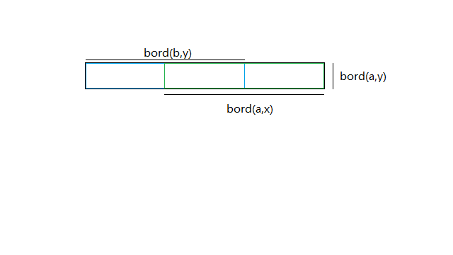

题意
现在有一个只包含小写字母的字符串S。
如果一个包含小写字母和数字的串T满足以下性质，则称T为一个合法的串。
- 若按照下列规则将T中的数字修改成字母(不在规则中的数字不替换)后,T是S的子串：
0->o,1->i,3->e,4->a,5->s,7->t,8->b,9->g - 长度为k（题目给定）
请你找出一个最短的字符串L，使所有的合法的串都是L的子串。（满足长度）
题解
长文警告
思路其实就是转化成最小边权欧拉路径（这样可用网络流求解），最后用题目性质优化掉网络流。
定义:
- 为字符串a,b的最长公共前后缀（a的后缀，b的前缀），也就是末尾个字符从变成需要添加的字符数。
- 表示字符串a的长度。
先考虑所有合法串都由小写字母构成的情况。
如果我们把所有长为的串看作一张图上的点，每一个长为的串看作从它的长为的前缀连向它长为的后缀的边，那么一个字符串可以看作这张图上的一条边。
考虑往图中加一些边，且一条从到的边的边权是。
问题就转化成了找一条路径，使所有合法串代表的边必须被经过至少一次，并且边权和最短。
实际上这个问题可以等价于在图中加入一些边（被经过多次的边可以看做加入重边）并找出一条路径，使每条边都被恰好经过一次，且边权和最小。
原图中的边肯定是要被经过的，所以只用考虑如何在加入的边权和尽量小的情况下满足是一条路径的限制。
显然不加入边时原图中的边形成了一个联通块，所以只要找到一种方案，使得最多一个点出度比入度少1，最多一个点入度比出度少1即可。
会发现出度>入度的点新增出边，入度>出度的点新增入边都是不优的，所以可以把图分成三部分：入度<出度（源），入度=出度，入度>出度（汇），然后暴力把所有的边建出来跑最小费用流去填补度数（要减去最后一步增广的费用，因为只要求路径，不需要成回路）。
这里可以直接不管入度=出度的点，因为字符串的性质，不存在松弛（a->c->b一定不比a->b优）。
这样就变成了一个二分图匹配。
还有一个性质是这个网络流并不会用到反向边（不会反悔），每次增广直接跑dijkstra即可，接下来是证明。
设目前状态下，最短路（最小代价匹配）是a-y且代价是dis(a,y)，且最优解中这条边没有出现。
发现a要么还有连出的,边权大于dis(a,y)的边，要么是省掉增广的点（毕竟是当前最短路），y也同理。
- 若a,y都是省掉最后一步增广的点，那么在这之后增广的边随便拉一条过来用就好。
- 若a是省掉最后一步增广的点，那么一定能找到一条权值且终点是y的边，把起点设成a不会更差。
- 若y是省掉最后一步增广的点，那么一定能找到一条权值且起点是a的边，把终点设成y不会更差。
考虑a和y都没有省掉最后一步增广的情况。
首先，一定能在最优解中找出一组边，且（毕竟a,y都还没流满）。
一定有。
根据dis的定义，只要即可。
移项得。
发现是的前缀（，都是的前缀）
同理，是的后缀。
把这三个串画出来：

可以直观的感受出是中间重叠的那一部分。
而中间那部分类似的东西显然既是的后缀，又是的前缀，而可能还能更长。
所以。
这张图虽然点数是的，但边数是的，直接k次dijkstra肯定爆炸。
设，那么a的长度为c的后缀和b的长度为c的前缀是相同的。
考虑直接枚举，每次匹配源集合和汇集合中相同的元素（每个匹配代价为c），匹配完后，删除源集合中每个元素的首字母和汇集合中每个元素的最后一个字母。
这样就能避免建边了。
考虑合法串有数字的情况。
发现假如两个合法串把数字替换成字母后一样，那么他们的出入度是一样的，可以当成一个点去考虑。
对于每一个c遍历一遍S中长度为的本质不同的子串，状态可以哈希或set。
复杂度或
code:
#include <iostream>
#include <cstdio>
#include <cstring>
#include <cassert>
#include <algorithm>
typedef long long lint;
const int N=5005;
const int Q=502;
int n,q,pre_wzz[N];
lint dgr[N],buk_s[N],buk_t[N];
bool vis[N],wzz[26];
char str[N];
inline int nxi(){
int x=0;
char c;
while((c=getchar())>'9'||c<'0');
while(x=x*10-48+c,(c=getchar())>='0'&&c<='9');
return x;
}
namespace H{
const unsigned P=137;
unsigned hsh[N],powp[N];
inline void build(char *str,const int len){
powp[0]=1;
for(int i=1; i<=len; ++i){
powp[i]=powp[i-1]*P;
}
for(int i=1; i<=len; ++i){
hsh[i]=hsh[i-1]*P+(unsigned)(str[i]-'a'+1);
}
}
inline unsigned get_hsh(const int l,const int r){
return hsh[r]-hsh[l-1]*powp[r-l+1];
}
}
class Disc{
protected:
unsigned buk[N],*pt;
public:
int tot;
Disc(){pt=buk;}
inline void insert(const unsigned v){
*pt++=v;
}
inline void build(){
std::sort(buk,pt);
pt=std::unique(buk,pt);
tot=pt-buk;
}
inline int ask(const unsigned v){
return std::lower_bound(buk,pt,v)-buk+1;
}
}D[Q];
lint solve(const int val){
static int rm_end[N],rm_fir[N];
static bool apl_s[N],apl_t[N];
static lint tmp_s[N],tmp_t[N];
const int len=q-1-val;
memset(apl_s+1,0,D[len].tot*sizeof(bool));
memset(apl_t+1,0,D[len].tot*sizeof(bool));
bool flag=0;
lint ans=0;
for(int i=D[len].tot; i; --i){
lint times=std::min(buk_s[i],buk_t[i]);
flag|=buk_s[i]||buk_t[i];
if(buk_s[i]-=times) apl_s[i]=1;
if(buk_t[i]-=times) apl_t[i]=1;
ans+=val*times;
}
if(!flag) return -1;
for(int i=1; i<=n-len+1; ++i){
int cur=D[len].ask(H::get_hsh(i,i+len-1));
if(!apl_s[cur]&&!apl_t[cur]) continue;
if(apl_s[cur]) rm_fir[cur]=D[len-1].ask(H::get_hsh(i+1,i+len-1));
if(apl_t[cur]) rm_end[cur]=D[len-1].ask(H::get_hsh(i,i+len-2));
}
memset(tmp_s+1,0,D[len].tot*sizeof(lint));
memset(tmp_t+1,0,D[len].tot*sizeof(lint));
for(int i=D[len].tot; i; --i){
if(buk_s[i]) tmp_s[rm_fir[i]]+=buk_s[i];
if(buk_t[i]) tmp_t[rm_end[i]]+=buk_t[i];
}
memcpy(buk_s+1,tmp_s+1,D[len-1].tot*sizeof(lint));
memcpy(buk_t+1,tmp_t+1,D[len-1].tot*sizeof(lint));
return ans;
}
int main(){
q=nxi();
scanf("%s",str+1);
n=strlen(str+1);
H::build(str,n);
wzz['o'-'a']=wzz['i'-'a']=wzz['e'-'a']=wzz['a'-'a']=1;
wzz['s'-'a']=wzz['t'-'a']=wzz['b'-'a']=wzz['g'-'a']=1;
for(int i=1; i<=n; ++i){
pre_wzz[i]=pre_wzz[i-1]+wzz[str[i]-'a'];
}
D[0].insert(0);
D[0].tot=1;
for(int i=1; i<=q; ++i){
for(int j=1; j<=n-i+1; ++j){
D[i].insert(H::get_hsh(j,j+i-1));
}
D[i].build();
}
lint ans=q-1;
for(int i=1; i<=n-q+1; ++i){
int id=D[q].ask(H::get_hsh(i,i+q-1));
if(vis[id]) continue;
vis[id]=1;
lint wgt=1ll<<(pre_wzz[i+q-1]-pre_wzz[i-1]);
assert(wgt>0);
int p1=D[q-1].ask(H::get_hsh(i,i+q-2));
int p2=D[q-1].ask(H::get_hsh(i+1,i+q-1));
ans+=wgt;
dgr[p1]+=wgt;
dgr[p2]-=wgt;
}
for(int i=1; i<=D[q-1].tot; ++i){
if(dgr[i]<0) buk_s[i]-=dgr[i];
if(dgr[i]>0) buk_t[i]+=dgr[i];
}
for(lint i=0,tmp=solve(i); ; tmp=solve(++i)){
if(tmp!=-1) ans+=tmp;
else{
if(i) ans-=i-1;
break;
}
assert(i<q);
}
printf("%lld\n",ans);
return 0;
}